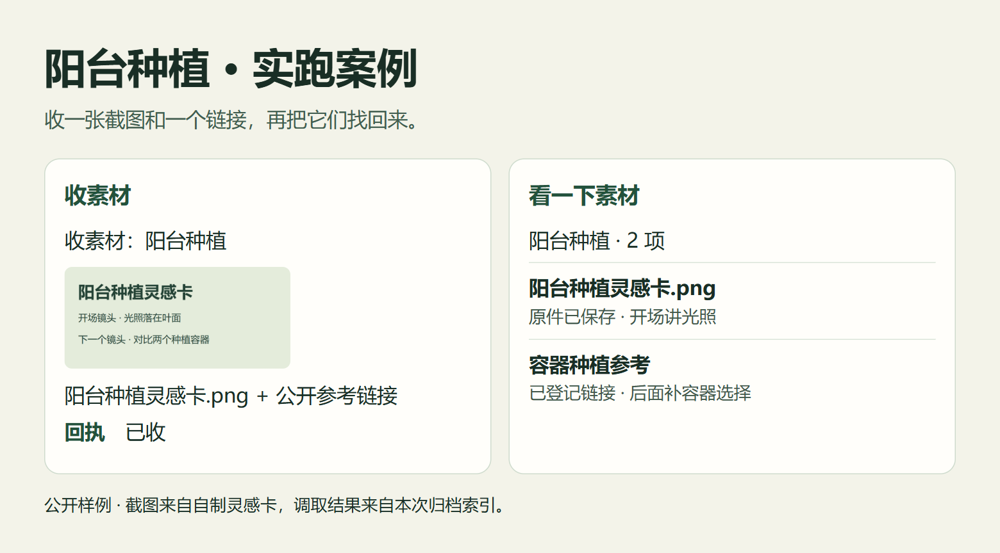

主题
阳台种植
阳台种植灵感卡.png截图 · 原件已保存
容器种植参考网页链接 · 已登记
试着收一回素材
用「阳台种植」这个公开样例，点开每一步看看助手会做什么。
1. 选个主题
你 收素材：阳台种植
助手 已打开「阳台种植」。
2. 发截图和链接
你 发来「阳台种植灵感卡.png」和容器种植参考链接，附一句备注「开场讲光照，后面补容器选择。」
助手 已收。
3. 找回素材
你 看一下素材
助手
- 阳台种植灵感卡.png · 原件已保存 · 开场讲光照
- 容器种植参考 · 已登记链接 · 后面补容器选择
换了聊天，说「打开阳台种植的素材」即可找回这个主题。
阳台种植 · 实跑案例
用实际收存回执和调取结果制作的案例图。点击可查看原图。

也可以查看秋季园艺的截图和调取结果。

复制这句话安装
复制下面这句话发给你的助手。
装好后说「收素材」。想一起指定主题，可以说「收素材：阳台种植」。
下载最新版